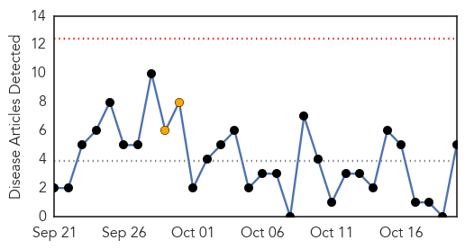
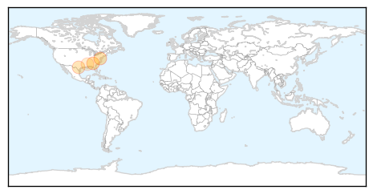
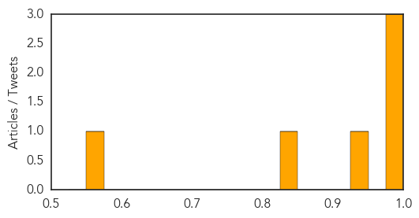

Chikungunya
30-Day Web Trend
0 alerts, 2 warnings

30-Day Twitter Trend
1 alerts, 0 warnings

Article Locations

Article Confidences

Top Articles:
- 0.994
- News Scan for Oct 20, 2014
- 0.993
- Costa Rica Confirms First Chikungunya Case Originating in Country
- 0.912
- 1st Indigenous Case of Chikungunya in Costa Rica Reported
- 0.615
- Chikungunya: Jamaica PM Miller declares ‘state of emergency’
- 0.579
- Long-term persistence of Chikungunya virus neutralizing antibodies in human populations of North Eastern Thailand
Top Tweets:
- 0.759
- RT: .@MichelJMartelly: Hay un estado de chikungunya actual,hemos reducido el VIH y hemos sido calificados como país libre de ru…
Influenza
30-Day Web Trend
0 alerts, 2 warnings

30-Day Twitter Trend
1 alerts, 0 warnings

Article Locations
Article Confidences
Top Articles:
Top Tweets:
-
No tweets found for Oct 20, 2014